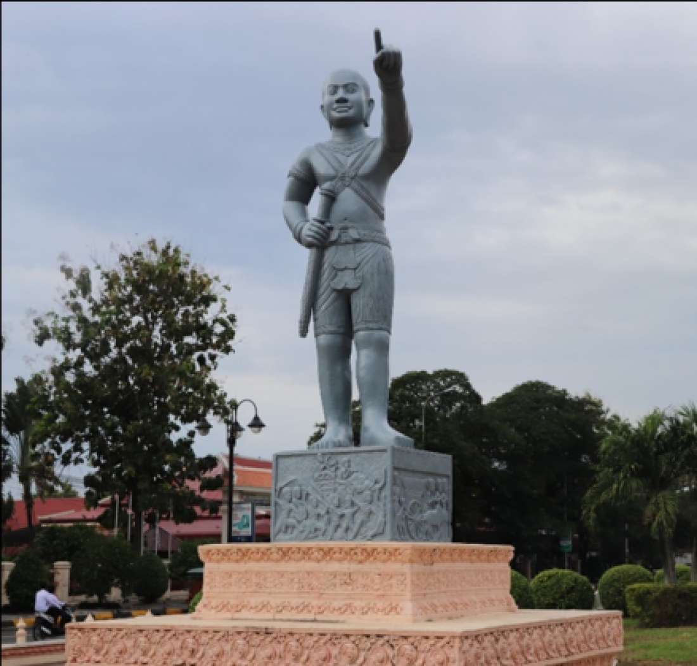

Prey Veng (Khmer: ព្រៃវែង [prɨj.ʋɛːŋ]; lit. 'High Forest') is a province (khaet) of Cambodia. The capital is Prey Veng. With a population of 1.1 million people, it is the third most populous province. This densely populated agricultural region is located on the east bank of the Mekong. The name literally means "long forest" in khmer, but the last great forests have gradually disappeared there over 30-year to provide for agricultural land. In early Christian era, the province was a major center of the kingdom of Funan, between economic and political capitals of the country what were Oc Eo (now in the Vietnamese province of An Giang) and Angkor Borei (in the Cambodian province of Takéo province). However, with the advent of Chen-la, the hub of the kingdom moved farther west, to Koh Ker and Angkor and the region lost its importance. In the 15th century, the Khmer emperors, under threat from the Siamese (former name of people of current Thailand) decided to resettle back to the east, to Oudong, Lovek then Phnom Penh. Prey Veng did not favor them as it was too close to another danger, namely the Annam. Nevertheless, they formed an army at Ba Phnom in 1473 to defend against an invasion of Siam. Under the French protectorate, the colonial authorities saw potential of the region in terms of agriculture and fishing and its proximity to the French colony of Cochin China. Mass deforestation took place, to create land for agriculture. In 1975 when the Khmer Rouge took power, the province experienced its first famine, until 1977. Thousands of people in Prey Veng province were killed by the Khmer Rouge and buried in mass graves. As the Vietnamese army advanced in January 1979, the region regained its position and became one of the first areas of Cambodia liberated from the Khmer Rouge. The province is bordered by those of Kampong Cham to the northwest, Tbong Khmum to the northeast, Kandal to the west, and Svay Rieng to the east and by Vietnam (Đồng Tháp, Long An and Tây Ninh) to the south. It is crossed by two major rivers of the country, namely the Mekong and Tonle Bassac. The total land area of the province is 4,883 km2, which equals 2.7% of the total land area of Cambodia (181,035 km2). This consists of 445.18 km2 or 9.12% of human settlements, 3,100 km2 or 63.49% of agricultural land use, 194.61 km2 or 3.99% of forested area, 1,082.86 km2 or 22.18% of public land, infrastructure and water bodies. The remaining 60.35 km2 or 1.24% are unused areas.
